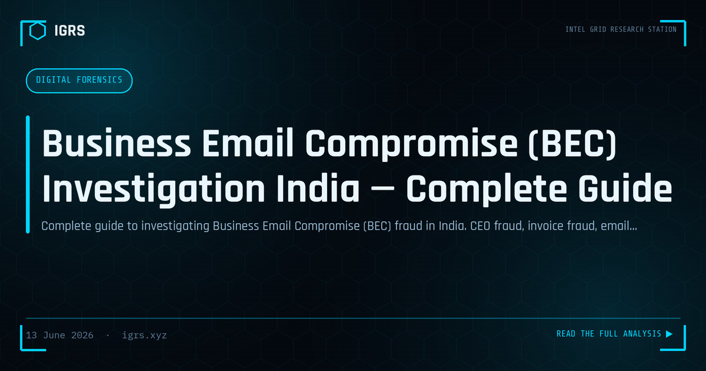

Business Email Compromise (BEC) Investigation India — Complete Guide
Business Email Compromise: The Costliest Cybercrime
Business Email Compromise (BEC) is, by financial value, one of the most damaging cybercrimes globally — and India's growing corporate sector is increasingly targeted. Unlike mass phishing, BEC is precise and patient: attackers impersonate executives, vendors, or trusted partners to trick employees into transferring funds or revealing sensitive data. Indian companies have lost crores to fake invoice fraud, CEO fraud, and vendor impersonation. This guide explains how BEC works and how it is investigated.
Types of BEC Attacks
| Attack Type | How It Works |
|---|---|
| CEO fraud | Spoofed executive email instructs an urgent wire transfer |
| Invoice fraud | Spoofed vendor changes bank details on a legitimate-looking invoice |
| Account compromise | A real employee email is hacked and used to send fraudulent instructions |
| Attorney impersonation | Fake lawyer demands urgent confidential payment |
| Data theft | Impersonation to extract payroll or tax data |
Email Header Investigation
The investigation begins with the email headers, which reveal the true path and origin of a message:
- Authentication-Results — SPF, DKIM, DMARC pass/fail status
- Reply-To — often differs from the displayed From address in BEC
- X-Originating-IP — traces to the attacker's mail server
- Received chain — the server-by-server path, read bottom to top
- Message-ID — unique identifier for cross-referencing
Authentication failures and a mismatched Reply-To are strong indicators of spoofing.
Domain Spoofing Analysis
BEC frequently relies on lookalike domains. Investigators examine the exact sending domain for subtle manipulation:
| Technique | Example |
|---|---|
| Character substitution | c0mpany.com (zero for o) |
| Homoglyph attack | Cyrillic characters resembling Latin |
| Subdomain spoofing | billing@pay.company-invoices.com |
| TLD variation | company.co instead of company.com |
WHOIS lookup on the lookalike domain often reveals recent registration — a strong fraud indicator.
The Money Trail and Recovery
When funds have been transferred, rapid recovery action is critical:
- Contact the sending bank immediately to request a SWIFT recall
- Engage the receiving bank through the SWIFT Recall/Return/Claim mechanism
- File a complaint at cybercrime.gov.in with the transaction reference
- For international transfers, involve the Enforcement Directorate under FEMA
The window for recall is narrow — often hours — making immediate action essential.
Legal Sections for BEC
| Section | Act | Offence |
|---|---|---|
| Section 66 | IT Act 2000 | Computer-related fraud |
| Section 66C | IT Act 2000 | Identity theft |
| Section 66D | IT Act 2000 | Personation using computer |
| Section 318 | BNS 2023 | Cheating |
For international wire transfers, FEMA provisions and the Enforcement Directorate's powers come into play, particularly for cross-border fund recovery.
How Account Compromise BEC Happens
The most dangerous BEC variant involves a genuinely compromised email account. Attackers gain access through phishing or credential theft, then monitor the inbox silently, learning communication patterns and waiting for a high-value transaction. They may set up forwarding rules to hide their activity and strike when a legitimate payment is due, inserting fraudulent bank details. Investigating these cases requires examining mailbox rules, login logs, and IP access history.
Defending Against BEC
Prevention is far cheaper than recovery. Core defences include:
- Implement SPF, DKIM, and DMARC to prevent domain spoofing
- Enforce out-of-band verification for any change in payment details
- Train staff to scrutinise urgency and authority in payment requests
- Deploy MFA on all email accounts to prevent compromise
- Flag external emails and lookalike domains automatically
- Establish a dual-approval process for large transfers
Building the Investigation
A BEC investigation combines email forensics, domain analysis, the financial trail, and — where an account was compromised — access log analysis. All electronic evidence requires a Section 63 BSA 2023 certificate and hash verification. Because BEC often crosses borders, early coordination with banks, CERT-In, and where necessary international channels through the ED is what makes both recovery and prosecution possible. Speed, sound email forensics, and disciplined evidence handling are the pillars of effective BEC investigation.